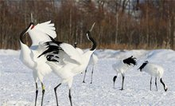

丹顶鹤具备鹤类的特征，即三长——嘴长、颈长、腿长。大型涉禽，全长约120厘米。体羽几乎全为纯白色。头顶裸出部分鲜红色；额和眼先微具黑羽；喉、颊和颈大部为暗褐色。次级和三级飞羽黑色，延长弯曲呈弓状。尾羽短、白色。嘴灰绿色，脚灰黑色。
成鸟除颈部和飞羽后端为黑色外，全身洁白，头顶皮肤裸露，呈鲜红色。传说中的剧毒鹤顶红（也有成鹤顶血）正是此处，但纯属谣传，鹤血是没有毒的，古人所说的“鹤顶红”其实是砒霜，即不纯的三氧化二砷，鹤顶红是古时候对砒霜隐晦的说法。丹顶鹤的尾脂腺被粉（冉羽）。幼鸟体羽棕黄，喙黄色。亚成体羽色黯淡，2岁后头顶裸区红色越发鲜艳。
大小量度：体重♂7000~9000g，♀9000~10500g；体长1200~1520mm；嘴峰♂151~167mm，♀135~167mm；翅♂560~670mm，♀557~635mm；尾300mm；跗跖♂267~301mm，♀255~297mm。